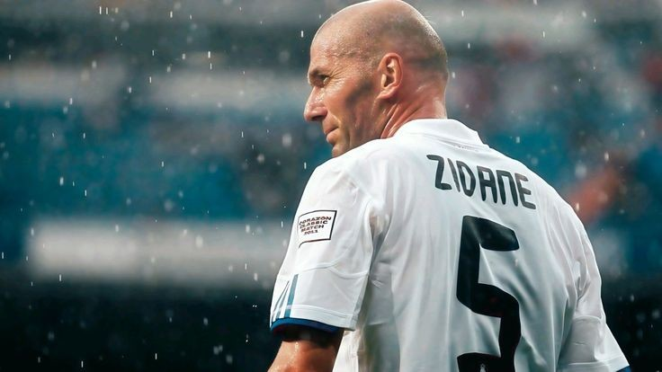
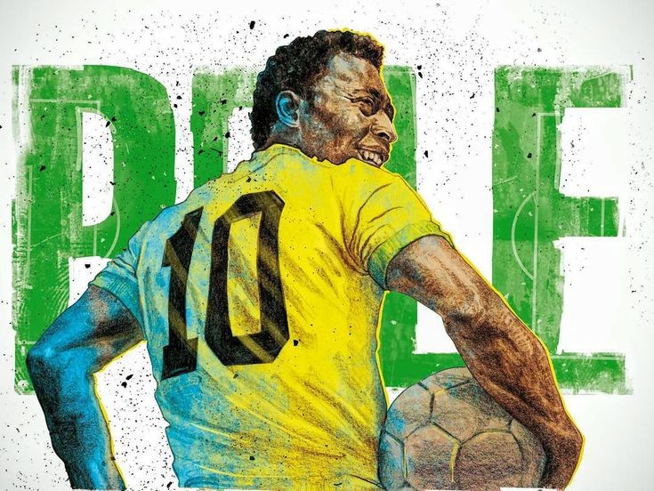

Di sebuah pulau kecil bernama Madeira, lahirlah seorang anak bernama Cristiano Ronaldo pada 5 Februari 1985. Sejak kecil, Ronaldo sangat mencintai sepak bola. Ia sering bermain di jalanan dan lapangan sederhana bersama teman-temannya. Meskipun keluarganya hidup sederhana, ia memiliki mimpi besar: menjadi pemain sepak bola terbaik di dunia.
Saat berusia muda, Ronaldo bergabung dengan akademi Sporting CP. Bakatnya yang luar biasa membuat banyak orang kagum. Ia berlatih lebih keras daripada pemain lain dan tidak pernah menyerah meskipun menghadapi berbagai kesulitan.
Kerja kerasnya membuahkan hasil ketika ia direkrut oleh Manchester United. Di bawah bimbingan pelatih legendaris Sir Alex Ferguson, kemampuan Ronaldo berkembang pesat. Kecepatan, teknik menggiring bola, dan tendangan kerasnya membuatnya menjadi salah satu pemain paling berbahaya di dunia.
Beberapa tahun kemudian, Ronaldo bergabung dengan Real Madrid. Di sana, ia mencetak ratusan gol dan membantu tim memenangkan banyak gelar bergengsi. Ia memecahkan berbagai rekor dan meraih penghargaan individu, termasuk beberapa trofi Ballon d'Or.
Kesuksesannya tidak berhenti di situ. Ronaldo juga bermain untuk Juventus dan kembali memperlihatkan kualitasnya sebagai pemain kelas dunia. Bersama tim nasional Portugal, ia berhasil memenangkan UEFA Euro 2016, sebuah pencapaian bersejarah bagi negaranya.
Yang membuat Ronaldo istimewa bukan hanya bakatnya, tetapi juga disiplin dan kerja kerasnya. Ia selalu menjaga kondisi fisik, berlatih dengan sungguh-sungguh, dan terus berusaha menjadi lebih baik setiap hari. Sikap pantang menyerah itulah yang membuatnya menjadi inspirasi bagi jutaan orang di seluruh dunia.
Hingga kini, nama Cristiano Ronaldo dikenal sebagai salah satu pemain sepak bola terbaik sepanjang masa. Kisah hidupnya mengajarkan bahwa mimpi besar dapat diraih melalui kerja keras, disiplin, dan keyakinan untuk tidak pernah menyerah. ⚽🏆

Di sebuah kota bernama Rosario, lahirlah seorang anak bernama Lionel Messi pada 24 Juni 1987. Sejak kecil, Messi sudah menunjukkan bakat luar biasa dalam bermain sepak bola. Ia sangat menyukai bola dan hampir setiap hari menghabiskan waktunya untuk berlatih dan bermain bersama teman-temannya.
Namun, perjalanan Messi menuju puncak dunia tidaklah mudah. Saat masih kecil, ia didiagnosis mengalami gangguan hormon pertumbuhan yang membuat tubuhnya lebih kecil dibandingkan anak-anak seusianya. Banyak orang meragukan masa depannya sebagai pesepak bola profesional. Meski demikian, Messi tidak pernah menyerah pada mimpinya.
Pada usia 13 tahun, Messi pindah ke Spanyol untuk bergabung dengan akademi muda FC Barcelona. Di sana, bakatnya berkembang dengan sangat cepat. Kemampuan menggiring bola, visi permainan, dan ketepatan mencetak gol membuatnya berbeda dari pemain lainnya.
Ketika berhasil menembus tim utama Barcelona, Messi mulai menunjukkan keajaibannya di lapangan. Ia membantu klub meraih berbagai gelar bergengsi, termasuk kompetisi domestik dan Eropa. Bersama Barcelona, Messi mencetak ratusan gol dan memecahkan banyak rekor yang sebelumnya dianggap sulit untuk dilampaui.
Selain sukses di level klub, Messi juga berjuang keras bersama tim nasional Argentina. Setelah beberapa kali mengalami kegagalan di final turnamen besar, ia akhirnya berhasil membawa Argentina menjuarai Copa América 2021. Puncak karier internasionalnya terjadi saat memimpin Argentina meraih gelar juara FIFA World Cup 2022, sebuah prestasi yang mengukuhkan namanya sebagai salah satu pemain terbesar sepanjang sejarah.
Messi dikenal karena kerendahan hati, kecerdasan bermain, dan kemampuannya menciptakan momen-momen luar biasa di lapangan. Ia tidak hanya mencetak gol, tetapi juga memberikan assist dan menginspirasi rekan-rekannya untuk bermain lebih baik.
Kisah Lionel Messi adalah bukti bahwa keterbatasan bukanlah penghalang untuk meraih kesuksesan. Dengan kerja keras, dedikasi, dan semangat yang kuat, ia berhasil mewujudkan impiannya dan menjadi salah satu pemain sepak bola terbaik yang pernah ada. Bagi jutaan penggemar di seluruh dunia, Lionel Messi bukan hanya seorang pemain sepak bola, tetapi juga simbol perjuangan, ketekunan, dan keajaiban dalam olahraga. ⚽🏆🌟

Zinedine Zidane lahir pada 23 Juni 1972 di Marseille, Prancis. Sejak kecil, Zidane sudah menunjukkan kecintaannya terhadap sepak bola. Ia sering bermain di jalanan dan lapangan-lapangan kecil di lingkungan tempat tinggalnya. Dengan bakat alami dan kerja keras yang luar biasa, ia perlahan mulai menarik perhatian banyak orang.
Karier profesional Zidane dimulai di AS Cannes sebelum melanjutkan perjalanannya ke Girondins de Bordeaux. Kemampuannya mengontrol bola, visi permainan yang tajam, dan umpan-umpan akurat membuatnya dikenal sebagai salah satu gelandang terbaik di generasinya.
Bakat Zidane semakin bersinar ketika ia bergabung dengan Juventus. Bersama klub tersebut, ia memenangkan berbagai gelar dan menjadi salah satu pemain paling disegani di dunia. Permainannya yang elegan dan penuh kreativitas membuat para penggemar sepak bola terpukau.
Pada tahun 2001, Zidane pindah ke Real Madrid dengan nilai transfer yang saat itu memecahkan rekor dunia. Di sana, ia menjadi bagian dari era "Galácticos" dan menciptakan banyak momen bersejarah. Salah satu yang paling dikenang adalah gol tendangan voli spektakulernya pada final UEFA Champions League Final 2002 yang membantu Real Madrid meraih gelar juara.
Di level internasional, Zidane menjadi pahlawan bagi Prancis. Pada FIFA World Cup 1998, ia tampil gemilang dan membantu Prancis meraih gelar juara dunia pertama dalam sejarah mereka. Ia juga berperan besar saat Prancis memenangkan UEFA Euro 2000.
Zidane dikenal bukan karena kecepatan atau jumlah gol yang luar biasa, melainkan karena kecerdasannya dalam bermain. Ia mampu mengendalikan tempo pertandingan, memberikan umpan-umpan brilian, dan menciptakan peluang yang sulit dibayangkan pemain lain. Banyak pengamat dan pemain sepak bola menganggapnya sebagai salah satu gelandang terbaik sepanjang masa.
Setelah pensiun sebagai pemain, Zidane melanjutkan kariernya sebagai pelatih. Bersama Real Madrid, ia berhasil meraih berbagai gelar bergengsi dan membuktikan bahwa dirinya tidak hanya hebat sebagai pemain, tetapi juga sebagai pelatih.
Kisah Zinedine Zidane mengajarkan bahwa bakat yang dipadukan dengan kerja keras, ketenangan, dan dedikasi dapat membawa seseorang menuju puncak kesuksesan. Hingga saat ini, namanya tetap dikenang sebagai salah satu legenda terbesar dalam sejarah sepak bola dunia. ⚽🏆🌟

Pelé lahir pada 23 Oktober 1940 di Três Corações. Ia berasal dari keluarga sederhana dan sejak kecil memiliki kecintaan yang besar terhadap sepak bola. Karena keterbatasan ekonomi, Pelé dan teman-temannya sering bermain menggunakan bola yang dibuat dari kain atau kertas yang diikat menjadi satu.
Meski hidup dalam kesederhanaan, Pelé tidak pernah berhenti bermimpi. Bakatnya yang luar biasa mulai terlihat sejak usia muda. Dengan kecepatan, teknik, dan naluri mencetak gol yang tajam, ia berhasil menarik perhatian banyak pencari bakat sepak bola di Brasil.
Pada usia 15 tahun, Pelé bergabung dengan Santos FC. Hanya dalam waktu singkat, ia menjadi bintang utama tim. Gol demi gol yang ia cetak membuat namanya terkenal di seluruh Brasil. Kemampuannya bermain sepak bola terlihat jauh melampaui usianya.
Puncak kejutan terjadi ketika Pelé dipanggil memperkuat tim nasional Brasil pada usia yang sangat muda. Dalam FIFA World Cup 1958 di Swedia, Pelé yang masih berusia 17 tahun tampil luar biasa dan membantu Brasil meraih gelar juara dunia pertamanya. Dunia pun mulai mengenal nama Pelé sebagai keajaiban sepak bola.
Kesuksesannya berlanjut dengan memenangkan FIFA World Cup 1962 dan FIFA World Cup 1970. Hingga kini, Pelé tetap menjadi satu-satunya pemain dalam sejarah yang berhasil memenangkan tiga gelar Piala Dunia sebagai pemain.
Selama kariernya, Pelé mencetak lebih dari seribu gol dalam pertandingan resmi dan tidak resmi. Ia dikenal karena kemampuan menggiring bola, visi bermain, tendangan akurat, serta kemampuan mencetak gol dari berbagai situasi. Bagi banyak orang, Pelé bukan hanya seorang pemain hebat, tetapi juga simbol keindahan sepak bola itu sendiri.
Di luar lapangan, Pelé menjadi duta olahraga dan inspirasi bagi jutaan orang di seluruh dunia. Kerendahan hati, kerja keras, dan kecintaannya terhadap sepak bola membuatnya dihormati oleh penggemar, pemain, dan pelatih dari berbagai generasi.
Hingga hari ini, Pelé dikenang sebagai "Raja Sepak Bola" atau The King of Football. Kisah hidupnya membuktikan bahwa seorang anak dari keluarga sederhana dapat mengubah sejarah dunia melalui bakat, kerja keras, dan tekad yang kuat. Namanya akan selalu menjadi bagian penting dari sejarah sepak bola dunia. ⚽👑🏆🌟
